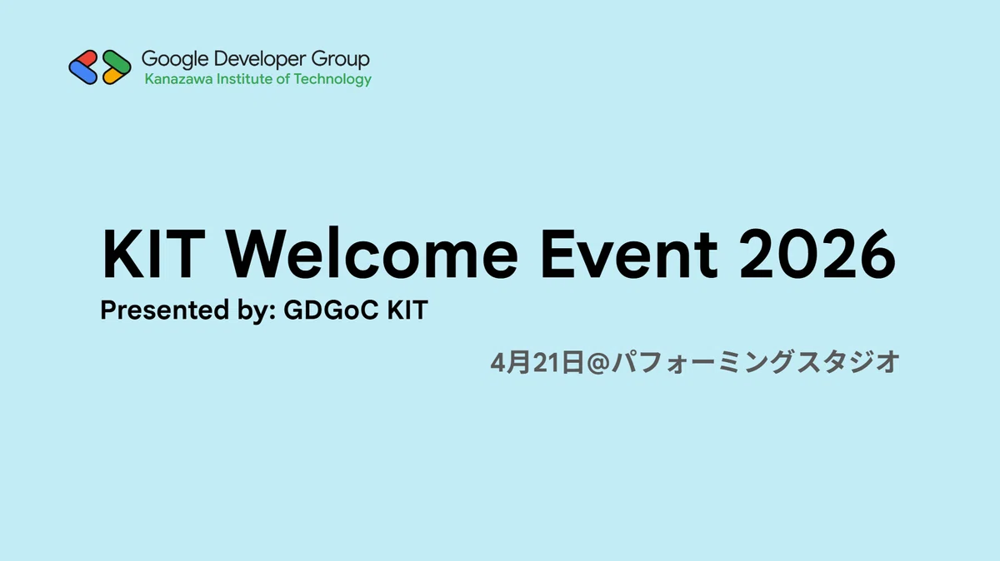
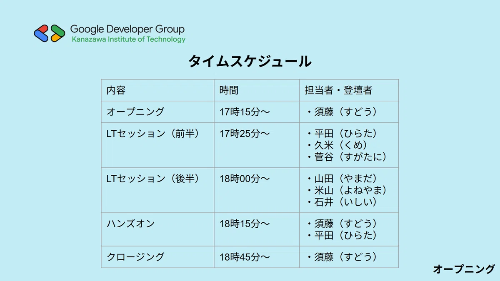
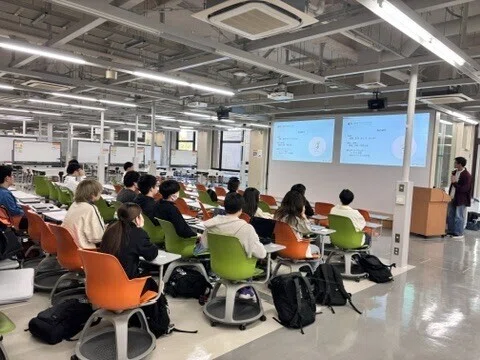
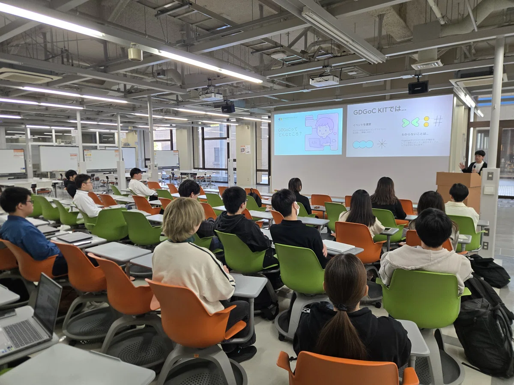
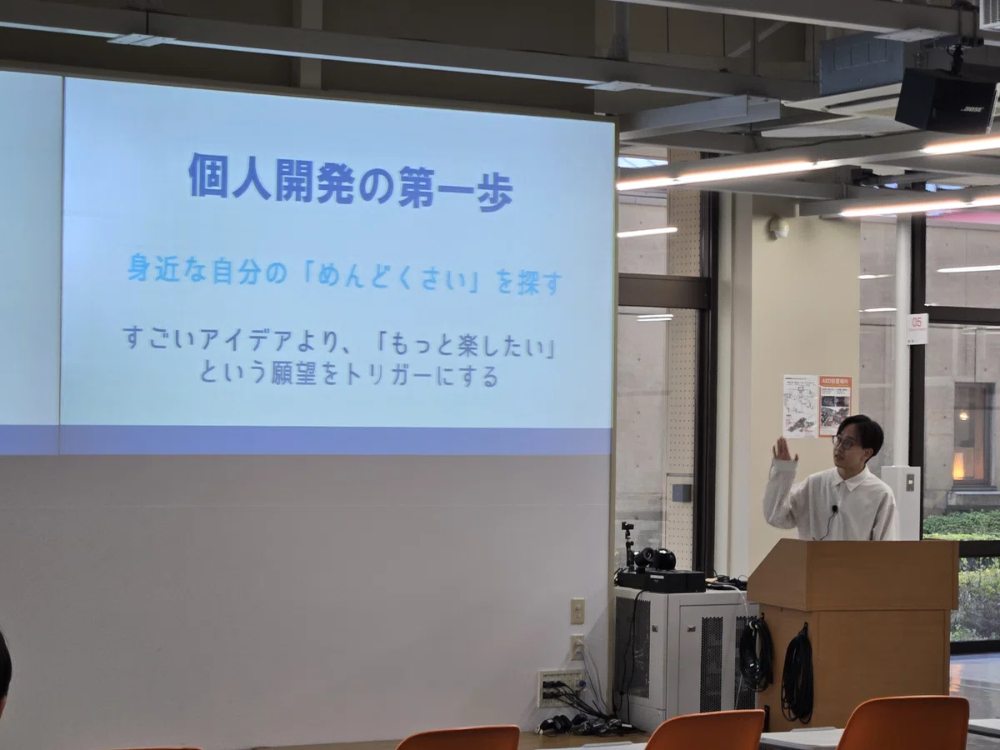
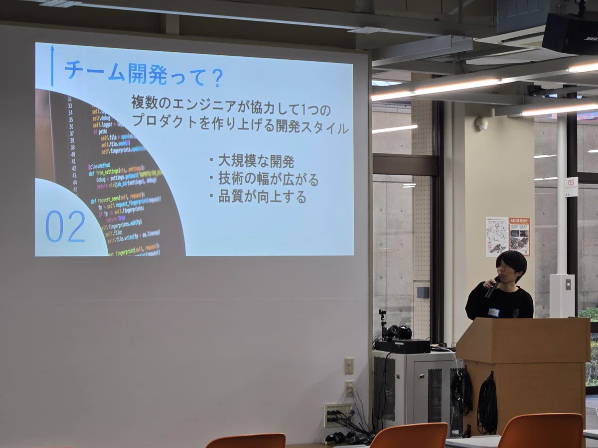
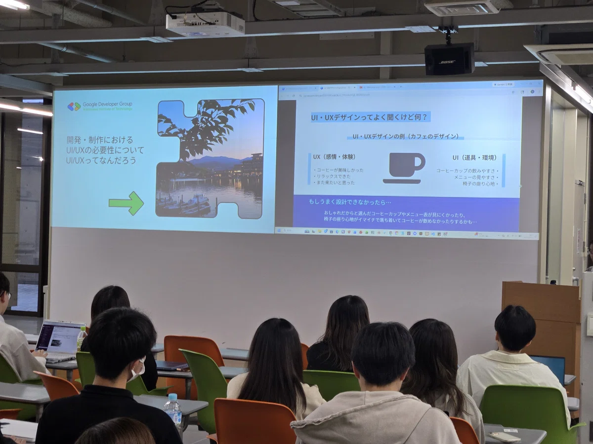
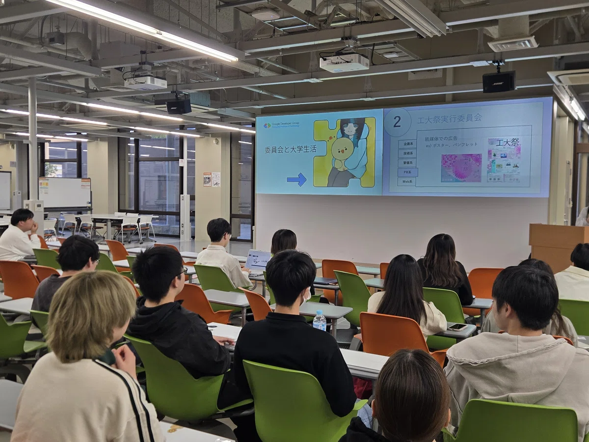
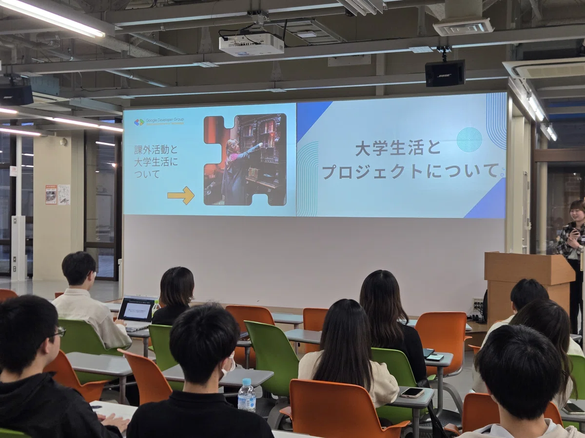
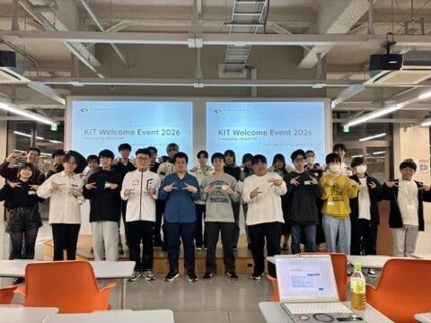

EVENT REPORT

2026/04/21 に開催されたイベント「KIT Welcome Event 2026」のレポートです。
今回のイベントを実施するにあたって、私たちがターゲットとした層として、大学に入りたての学部１年生、まだ技術に触れたことのない、興味のある学部２年生が当てはまります。
複数プロジェクト（※１）や委員会、その他課外活動に参加している学生や、エンジニアとして活動している学生視点での「個人開発関連」や「UI/UXデザイン」についてのLT発表に加え、Google 提供の CloudShell を用いたハンズオンを実施しました。
イベント詳細: connpassのイベントページ（外部リンク）

OPENING
登壇者: 須藤拓海（GDGoC KIT メンバー / 金沢工業大学 工学部 3年）

初めに、GDGoC KIT メンバーの須藤拓海によるオープニングがおこなわれました。このイベントを初登壇とする学生がいることもあり、イベントのタイムスケジュールや参加者向けの丁寧な案内を重視したセッションになっていました。
LT 01
登壇者: 平田陸翔（GDGoC KIT オーガナイザー / 金沢工業大学 工学部 3年）

初めのLTセッションは本イベントのオーナーであり、GDGoC KIT オーガナイザーの平田から始まりました。
「エンジニアと言えばプログラミングが得意な人が多いイメージもありますが、文系大学でも、このGDGoC グループが作られているんです！」と、技術意識の不安解消のもと、私たちGDGoC
がどのような活動をしているのかなどを、GDGoC KIT の過去の実績とともに紹介しました。
興味を持たれた場合、こちらの記事が分かりやすくまとまっているのでご覧ください！
LT 02
登壇者: 久米蒼輝（金沢工業大学 工学部 4年）

LTセッション2人目は、家で好きな作品を4D体験で楽しめるシステム「4D@HOME」の関係者、久米さんに登壇いただきました！
「何から作ればいいかわからない…」と迷っていませんか？ 私からは、「自分のためのモノづくり」から始める個人開発についてお話しします。 学内サイトの改善や学祭の屋台のアプリなど、私が「自分のために」作った実例をご紹介。 すごいアプリじゃなくてOK。自分の不便が解決できれば大成功です。 私が好き勝手に楽しんでいるモノづくりの話から、 皆さんの「最初の一歩」のヒントになるものを、自由に受け取って帰ってください！
connpass 内紹介ページより引用
個人開発の初心者によくある「あと一歩」。この壁が高く感じる人に対してどのようなアプローチをしたら気軽に開発することができるか、などを発表しました。
「身近な ” めんどくさい ” を探す」、「個人開発は決してリリースを大前提としたものではなくてもいい」。SNS
上では、個人開発者がアプリストアを通してリリースしている姿が多くみられる一方で、学生が使用する学内専用サイトの使いやすさを向上させる拡張機能を作るなど、より身近に、よりハードルを下げて開発することができるようなススメを教えてくださりました。
LT 03
登壇者: 菅谷煌稀（金沢工業大学 工学部 3年）

LT前半もラストひとり！
続いては、プロジェクトや教職課程にも所属している菅谷さん。
「一人で全部作るのは大変そう...」そう思っている人にこそ聞いて欲しいのがチーム開発です。プログラミング未経験の方に向けて、チームで開発するメリットと、スムーズに進めるためのポイントを解説します。後半は、チーム開発に欠かせない定番ツール『Git/GitHub』について紹介します。
connpass 内紹介ページより引用
ここでは、先ほどの個人開発とは似て非なるであろう「チーム開発」を中心に発表していきました。
個人開発とは異なり、数人でひとつのプロダクトを作る「チーム開発」。
自身の経験をもとに、チーム開発の楽しさや難しさなどを紹介しました。
最後には、菅谷さん自身が過去にやらかした、とても思い出に残るようなミスをしたことを紹介し、「適切なチーム開発によって、このようなミスも防ぐことができるようになる」と教えてくれました。
LT 04
登壇者: 山田桜（金沢工業大学 情報フロンティア学部 3年）

さて、LTセッション後半に移りました。
後半１人目は、学内の課外活動でプロダクトマネージャー兼デザイナーとして活動している山田さん。
UI/UXデザインってよく聞くけど何？ 開発や制作とどんな関係があるの？ UI/UXの設計の有無で何が変わるの？
connpass 内紹介ページより引用
「 UI / UX って、よく聞く言葉だけどなに？」「これって何が重要なの？」これらの悩みを解決してくれる、このセッション。
本学にはメディア情報（学位：学士 / 情報学）学科と、情報工学科（学位：学士 / 工学）のほか、複数の学科が集まっており、山田さんが在籍するメディア情報学科は主に視覚・聴覚に関する分野のほか、ゲーム制作（3D等）に関する授業を持つ学科であり、私たち情報工学科とは異なる視点での内容となりました。
「UI と UX 、聞いたことはあるけど、あまりイメージが付かない、、そんな人もいると思います。」言葉は聞いたことがあるのに、頭では理解が追い付かない、どの範囲がどこに当てはまるのかがわからない、そんな悩みに対応したセッションでした。
レポートの筆者としては「UI / UX は、エンジニアが考えるべき」とは考えておらず、デザイン設計を担当する人たちと、プログラミング設計を担当する人たちとの認識の差異を無くすための重要な「共通認識」であると考えており、この発表における、「どうして UI / UX が重要なのか」の部分がとても参考になったと感じています。
新入生のみなさんにも、いつか「あの時先輩が言っていたことだ」と感じてもらえると、運営としても嬉しいです。
さて、ここからは " エンジニア " とは少し異なるテーマでの発表となっています。
LT 05
登壇者: 米山奈穂（金沢工業大学 情報フロンティア学部 3年）

LT⑤は、委員会活動に注力している米山さんの発表です。
委員会と大学生活の両立についてお話します。
connpass 内紹介ページより引用
エンジニアリングに関する内容が一通り終わった頃に感じることもある、「エンジニアのことについてはわかったけど、そんな余裕ってあるのかな。」という疑問についてお答えするセッションのうちの１つです。
ここでは、委員会活動に所属してみて、どう感じているか、どのような過ごしてきたか。大変だったことはどういうことかなど、１年生視点になり、やさしく話してくれました。
LT 06
登壇者: 石井夢井（金沢工業大学 工学部 3年）

さて、LTセッション最後の登壇者は、いくつかの課外活動に参加している石井さんです。
このセッションが終わると、次はハンズオンに移ることとなります。
自分がこれまでおこなってきたプロジェクトの紹介と大学生活でどのように過ごしてきたかを発表します。
connpass 内紹介ページより引用
オオトリとしての発表！
と言ってしまうと、本人にはプレッシャーしか与えないのでそんなことは言いません。なにしろLT①，LT②以外の登壇者は皆さんが初登壇だったりするので、むしろバックアップをする対象なのですから。
さて、このLTのタイトルは「大学生活とプロジェクトについて」です。
「大学生活？それってLT⑤と内容がかぶるんじゃ …
」いえ、そんなことはありません。むしろ、かぶらないようにするのではなく、本音本心から伝えてほしいという気持ちもあり登壇をお願いしていたので、むしろ「どこを主張したいか」、「他の人との共通点はどこか」といった感じで受け取ってもらうことができれば、LT⑤とLT⑥を実施した意味があったのではないでしょうか。少なからず執筆者である私はそう感じます。
サークルのような課外活動のほか、委員会にも入っている石井さん。所属している課外活動で触っている「コード化点字ブロック」についての紹介や、それらに関するアプリ開発についてどのようなことを感じたかなどを発表していました。
視覚障害をお持ちの方にとって有効であるとされ、導入事例が多々あるコード化点字ブロックのアプリ開発に携わる経験は、とても貴重になってきそうですね。頑張ってほしいです。
HANDS-ON
担当: 須藤拓海（GDGoC KIT メンバー / 金沢工業大学 工学部 3年）
LTセッションが終わり、大急ぎで始まってしまったハンズオンセッション。
「とても時間が押してますね、これから長い説明が必要なのでしょうか」
なんて、こんなことは言っていません。もちろん、イベントの質が落ちてしまうからというのもありますが、ハンズオンには参加者数に対して時間が盛大に取ってあったからなのです。
ハンズオンのながれは以下の通りです、
１．ハンズオンの説明
２．テンプレートの取得
３．取得したリポジトリを自身のGitHub アカウントに紐づけ
４．拡張機能「LiveSever」の導入
５．自分なりに編集
６．アップロード
７．公開（したい人だけ）
８．発表（運営を含む参加者の中からランダムで抽選）
※ここでいう「アップロード」は開発者でいう「プッシュ」に当てはまります。
私たちは、ハンズオンをひとつのセッションとして扱っているため、十分な時間を組み込んでいます。
そのため、説明にも時間をかけることができ、「ハンズオンとはなにか」から、「ハンズオンの目的」、「ハンズオンのながれとサポートについて」その他、イベント参加者へのお願いやハンズオン特有の連絡もおこないました。
事前にGitHub アカウントの作成やDiscord サーバーへの参加、Google アカウント作成をお願いしていたので、その手順説明を省き、公開されているGitHub リポジトリからの取得・複製（クローン）から始まりました。
その後はすべて、Discord サーバーに資料を共有しつつ、編集すべき内容や編集方法を示し、進めていきました。
ランダムでの抽選、そして発表。
まさかの２年生と１年生が発表することに。
とは言いつつ、私からすると、それが目当てでもあったりなかったり。。
最初に４年の久米さんが発表してくださり、とてもハードルが上がっちゃいましたね。ランダムで当たった参加者の皆さんはとてもお疲れ様でした … … ！！
ランダムの抽選で運営がひとつも発表しなかったうえに、参加者からの「発表して！」って声が上がったこともあり、ハンズオン担当の私も発表をおこないました。
※ちなみに、久米さんは対話型AI の機能を実装しており、参加者からは「おー」という歓喜と、「あはは … 笑」という（すごすぎる から来る）苦笑いが会場で響き渡りました。
クロージングセッションとしては量が少なめの内容にはなりましたが、作ったものを共有してもらう時間と、次回イベントの予告などをして終了しました。
"Done is better than perfect."
「完璧を目指すより、まずは実行しよう。」マーク・ザッカーバーグの発言です。
ハンズオンやLT セッションでもあったように、簡単なモノ作りから体験することが大切だと思っています。
みなさんも、何かあれば実行してみるのはどうでしょうか？
